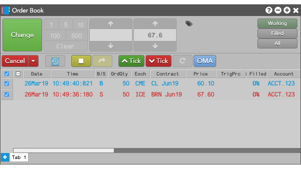
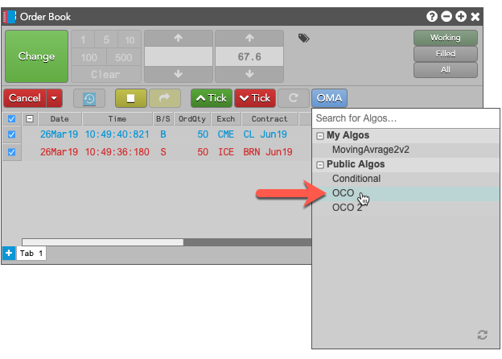
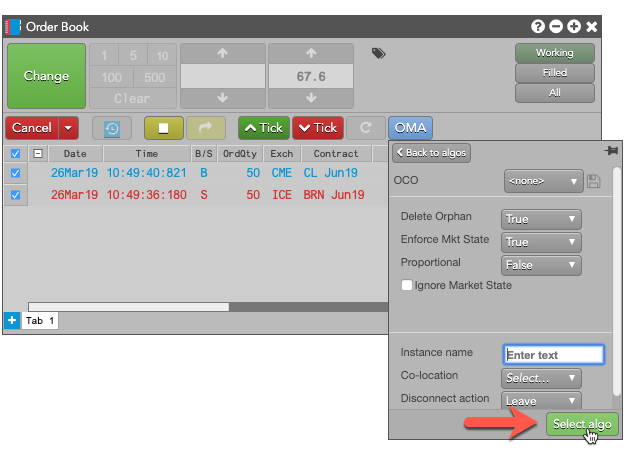
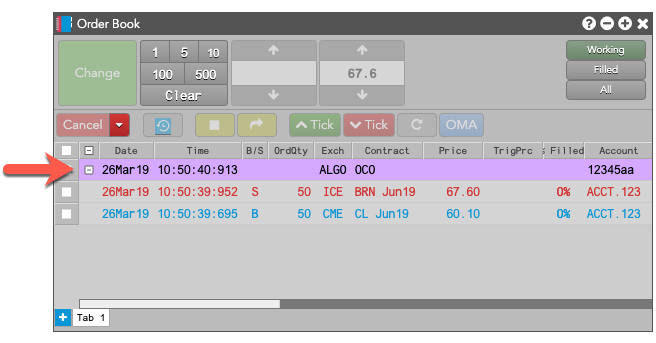

The OCO OMA lets you adopt two or more working orders in the Order Book and apply an OCO (one-cancels-other) OMA (Order Management Algo) to them. When one order is fully-filled, the other orders are canceled. Also, when partial fills are received for one order, the quantities of the other orders are reduced accordingly. The OCO OMA also lets you choose whether cancel the order if the market state of one of the child orders changes to a non-tradable state.
Limitations for adopting orders
The OCO OMA can adopt exchange orders, TT Order Types, Synthetic Order Algos (SOAs) created in ADL and child orders of other algos. It cannot, however, adopt:
-
TT Order Type parent orders
-
Autospreader® parent orders
-
Aggregator parent orders
-
OTC orders
Launching the OCO OMA
To launch the OCO OMA:
-
In the Order Book (or a Floating Order Book), select the orders you want the OCO OMA to adopt and manage.

-
Click OMA and select OCO from the dropdown.

-
Customize any desired algo parameters and click Select algo.

The OCO parent algo is added to the Order Book above the orders it adopted. If you collapse the parent OCO orders, its child orders will be hidden in the Order Book.

OCO OMA parameters
The OCO OMA uses the following parameters:
-
Delete orphan: Whether to delete the balance of a larger order when an order with a smaller quantity is fully-filled.
If, at any time, the working quantity of any one of the OCO OMA child orders goes to zero, the other orders are considered to be "orphans." When this parameter is TRUE, all remaining orders are deleted, regardless of their working quantities.
-
Enforce Mkt State: Whether to delete the OCO order, and its child orders, if the market state of one of the child instruments changes to a non-tradable state.
If the market state of an instrument changes to something other than Open, and Enforce Mkt State is enabled, all orders will be deleted.
-
Proportional: Method to use when reducing the quantities of other legs when one leg is filled.
- True: Reduce the other leg quantities by the same proportion of the fill quantity to the order quantity of the filled order.
- False: (Default) Reduce the other leg quantities by the fill quantity of the filled order.
For example, suppose you create an OCO OMA algo for a 100-lot order and two 50-lot orders and that the 100-lot order receives a fill for 20 lots (20%). If the Proportional parameter is True, the quantities of the remaining two 50-lot leg orders will also be reduced by 20%, or 10 lots each. If the parameter is false, the quantities of each of the other orders will be reduced by 20 contracts.
-
Ignore Market State: Whether to ignore the market state when submitting the parent OCO OMA.
-
Instance name: Optional name for this algo instance.
-
Co-location: Location of the Algo Server to run this algo.
The Co-location drop down is seeded based on the market of the default instrument in the selected algo. It will also seed when multiple instruments are defined if all instruments are from the same market.
-
Disconnect action: Action to take if the client loses its connection to TT:
- Leave to allow the algo to continue running normally.
- Pause to suspend the algo until you manually restart it.
- Cancel to delete the algo.
Note: You can set the default Disconnect action in the Preferences